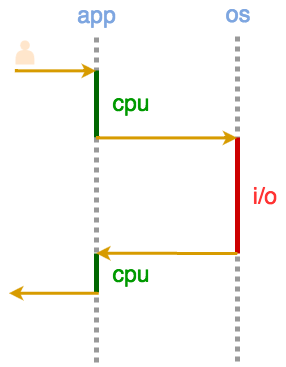

Node.js
Гоголев Сергей
Ресурсы

CPU

Memory

Disk

Network
Сферические операции в вакууме
Вычисление числа Фибоначчи
– CPU bound операция
Подсчёт количества строк в файле
– I/O bound операция
Сохранение промежуточных вычислений
– Memory bound операция
Операции в web-приложении
Чтение HTTP запроса | I/O |
Парсинг HTTP запроса | CPU |
Запрос к базе данных | I/O |
Запрос к API | I/O |
Генерация HTML | CPU |
Отправка HTML | I/O |
Поток выполнения
Одновременно выполняется
только одна операция
I/O
Blocking I/O

Blocking I/O
I/O Чтение 1 Кб данных c SSD – 0.0014 ms
CPU 28 000 циклов на одном 2Ghz ядре
I/O Сетевое соединение – 60 ms
CPU 132 000 000 циклов на одном 2Ghz ядре
Решение #1: Multithreading

Решение #1: Multithreading
- Поднятие потока – небесплатная операция
(можно использовать пулл потоков) - Есть лимит на количество
- Каждый поток требует
дополнительной памяти
Решение #2: Non-blocking I/O


Паттерн Reactor
Apache vs Nginx
Apache использует multithreading
Nginx использует паттерн reactor
Apache vs Nginx

Apache vs Nginx

2009

Ryan Dahl
Event demultiplexer
Event notification interface
 epoll
epoll
 kqueue
kqueue
 I/O Completion Port API
I/O Completion Port API

Особенности libuv
- В linux операции над локальными файлами всегда блокирующие (в отличие от сетевых операций)
- Для эмуляции неблокирующего поведения libuv использует потоки
- По умолчанию создаётся пулл 4 потоков
- Четыре долгих операции над файлами
блокируют всё приложение
Про libuv
About libuv, Bert Belder

Помимо ресурса необходимо указать обработчик результата – callbaсk
var data = request('https://api.github.com/');
var result = writeFile(file, data);
console.info(result);
request('https://api.github.com/', function (err, data) {
writeFile(file, data, function (err, result) {
console.info(result);
});
}
Паттерн Callback
1. Callbacks come last
2. Error comes first
JavaScript
✓ Функции первого класса и замыкания
✓ Готов к EventLoop (DOM events, setTimeout)
✓ Большое комьюнити !

API работы с файловой системой – fs, для запросов – http, логирования – console


Node.js
Original Node.js presentation, Slides,
Ryan Dahl
Understanding Node.js Event Loop,
Tamas Kadlecsik
How does NodeJS work,
Eugene Obrezkov
Getting started
apt-get install nodejs
brew install node
 Скачать с nodejs.org
Скачать с nodejs.org
$ node
> 2 + 2
4
v6 LTS – длительная поддержка
v7 Current – самые новые возможности
Модули
- Фундаментальный блок кода для структурирования приложений в Node.js
- Node.js приложения состоят из модулей
- Реиспользуемый между приложениями модуль называют пакетом
- В основе модулей – CommonJS
Модули: Создание
// hypotenuse.js
function square(n) {
return n * n;
}
function calculateHypo(a, b) {
return Math.sqrt(square(a) + square(b));
}
Модули: Экспорт
// hypotenuse.js
// module = {
// filename: '/absolute/path/to/hypotenuse.js',
// exports: {}
// }
function square(n) {
return n * n;
}
module.exports.calculate = function (a, b) {
return Math.sqrt(square(a) + square(b));
}
// return module.exports;
Модули: Импорт
// index.js
var hypotenuse = require('./hypotenuse.js')
hypotenuse.calculate(3, 4); // 5
Модули: Экспорт функции
// hypotenuse.js
function square(n) {
return n * n;
}
module.exports = function (a, b) {
return Math.sqrt(square(a) + square(b));
}
// index.js
var hypotenuse = require('./hypotenuse.js');
hypotenuse(3, 4); // 5
Модули: Экспорт других типов
module.exports = 42; // Число
function Student(name) {
this.name = name;
}
Student.prototype.getName = function() {
return this.name;
};
module.exports = Student; // Конструктор
module.exports = new Student('Billy'); // Объект
module.exports vs exports
// hypotenuse.js
function square(n) {
return n * n;
}
module.exports.calculate = function (a, b) {
return Math.sqrt(square(a) + square(b));
}
exports.calculate = function (a, b) {
return Math.sqrt(square(a) + square(b));
}
exports ⇢ module.exports
module.exports vs exports
// hypotenuse.js
function square(n) {}
exports = function (a, b) {
return Math.sqrt(square(a) + square(b));
}
// index.js
var hypotenuse = require('./hypotenuse.js');
hypotenuse(3, 4); // hypotenuse is not a function
exports x module.exports
Модули: Импорт встроенных (Core API)
var url = require('url');
url.parse('https://yandex.ru/');
{
protocol: 'https:',
host: 'yandex.ru',
port: null,
path: '/'
}
Модули: Импорт сторонних
var lodash = require('lodash');
lodash.shuffle([1, 2, 3, 4]);
// [4, 1, 3, 2]
lodash.uniq([2, 1, 2]);
// [2, 1]
Модули: Импорт
var counter = 1;
module.exports = function() {
return counter++;
};
var counter = require('./counter');
var anotherCounter = require('./counter');
console.info(counter()); // 1
console.info(counter()); // 2
console.info(anotherCounter()); // ?
console.info(anotherCounter()); // 3
Модули: Импорт
Модули импортируются один раз, и после первого require экспорт кешируется
Результат хранится в свойстве require.cache
{
'/absolute/path/to/filename.js': {
filename: '...',
exports: {},
}
}
Модули: Поиск
Если есть встроенный модуль с таким именем, экспортируется он – require('url')
Если имя начинается с ./, / или . ./, экспортируется по указанному пути – require('./index.js') или require('../index.js')
В противном случае пакет ищется в node_modules начиная с текущей директории и поднимаясь вверх – require('lodash')
Модули: Поиск
/home/gogoleff/hypotenuse/node_modules
/home/gogoleff/node_modules
/home/node_modules
Полный алгоритм
Node Package Manager
Инструмент командной строки, устанавливается вместе с Node.js
Глобальное хранилище модулей
registry.npmjs.org/lodash
npm init
Создаёт файл-манифест package.json, описывающий модуль
Модуль + манифест = пакет
Файл содержит название и версию нашего модуля, а так же его зависимости
 Demo
Demo
npm search math
Ищет пакет в хранилище по имени
npm show mathjs
Выводит информацию о пакете по имени
Demo
npm install mathjs
Устанавливает пакет в качестве зависимости в директорию node_modules
Если у зависимости есть подзависимости – установятся в node_modules у зависимости
npm install mathjs
node_modules └── mathjs@3.8.0 └──node_modules └─┬ ├── complex.js@4.0.3 ├── fraction.js@1.7.0 ├── basic-auth@1.0.3 └── tiny-emitter@1.0.1
npm install mathjs@3.8.0
Устанавливает определённую версию пакета
npm install --save mathjs
Зависимость зафиксируется в package.json
Demo
npm install --save-dev mocha
Устанавливает пакет в качестве зависимости, которая не требуется для работы модуля
Semantic Versions
2.7.0
major – новые возможности без сохранения обратной совместимости
minor – новые возможности с сохранением обратной совместимости
patch – исправления ошибок, рефакторинг
semver.orgnpm install
{
"dependencies": {
"express": "1.2.3",
"express": ">1.2.3",
"express": ">=1.2.3",
"express": "~1.2.3", // >=1.2.3 <1.3.0
"express": "^1.2.3", // >=1.2.3 <2.0.0
"express": "1.2.*",
"express": "latest",
"express": "git://github.com/expressjs/express.git",
"express": "git://github.com/expressjs/express.git#4.13.4",
"express": "git://github.com/expressjs/express.git#master",
"express": "git://github.com/expressjs/express.git#f3d99a4",
"express": "expressjs/express#f3d99a4"
}
}
Advanced Range Syntax
.npmrc
save=true // Всегда фиксировать зависимость
save-exact=true // Строго фиксировать версию
init-author-name='Sergey Gogolev'
docs.npmjs.com/files/package.json
NPM — найдётся подходящий модуль, Всеволод Струкчинский
Знакомимся с Node.js Core API
require('events');
var EventEmitter = require('events').EventEmitter;
var emitter = new EventEmitter();
emitter.on('log', console.info);
emitter.emit('log', 'Hello!'); // Hello!
emitter.emit('unknown event'); // Do nothing
emitter.emit('error');
// Uncaught, unspecified "error" event.
require('http');
Задача: принимать запросы и отвечать на них
var http = require('http');
var server = new http.Server();
server.on('request', function (req, res) {
res.end('Hello, User!');
});
server.listen(8080);
req instanceof http.IncomingMessage
server.on('request', function (req, res) {
console.info(req.method); // GET
});
req.headers; // {'accept-encoding': 'gzip'}
req.url; // /favicon.ico
res instanceof new http.ServerResponse
server.on('request', function (req, res) {
console.info(res.statusCode); // 200
});
res.setHeader('content-type', 'text/html');
res.write('Hello!');
res.end();
Demo
require('http');
Задача: cделать запрос и прочитать ответ
var http = require('http');
var req = http.request({
hostname: 'localhost',
port: 8080
});
require('http');
req.on('response', function (response) {
var body = '';
response.on('data', function (chunk) {
body += chunk; // res.write(chunk);
});
response.on('end', function () {
console.info(body); // res.end();
});
});
req.end();
Demo
require('url');
url.parse('https://yandex.ru/');
// {
// protocol: 'https:',
// host: 'yandex.ru',
// path: '/',
// ...
// }
url.format({
protocol: 'https:',
host: 'yandex.ru'
});
// https://yandex.ru/
require('querystring');
querystring.parse('foo=bar&arr=a&arr=b');
// {
// foo: 'bar',
// arr: ['a', 'b']
// }
querystring.stringify({
foo: 'bar',
arr: ['a', 'b']
});
// foo=bar&arr=a&arr=b
require('fs');
var fs = require('fs');
fs.readFile(__filename, function (err, content) {
console.info(content);
});
__filename – строка, которая хранит абсолютный путь до текущего файла
Buffer 63 6f 6e 73 74 20 66 73 20 3d 20 72 65 ...
require('buffer');
Для работы с бинарными данными
Буфер можно рассматривать как массив чисел, ограниченных диапазоном 0-255
Каждое число представляет байт
require('buffer');
var letterB = new Buffer([98]);
console.info(letterB.toString()); // b
console.info(letterB.toString('utf-8')); // b
require('buffer');
var msg = new Buffer([0x2f, 0x04, 0x3d, 0x04,
0x34, 0x04, 0x35, 0x04, 0x3a, 0x04, 0x41, 0x04]);
msg.toString(); // Default: utf8
// \u0004=\u00044\u00045\u0004:\u0004A\u0004
msg.toString('ucs2');
// 'Яндекс'
require('fs');
fs.readFile(__filename, function (err, data) {
console.info(data.toString());
});
fs.readFile(__filename, 'utf-8', function (err, data) {
console.info(data);
});
require('fs');
fs.appendFile();
fs.writeFile();
fs.unlink();
fs.mkdir();
fs.stat(__filename, function (stats) {
console.info(stat.isDirectory()); // false
});
require('fs');
fs.watch();
fs.watch(__filename, function (event, filename) {
console.info(event); // change or rename
});
fs.watch(__dirname, function (event, filename) {
console.info(event); // change or rename
});
require('fs');
fs.readFileSync(__filename);
fs.writeFileSync(__filename, data);
fs.mkdirSync('/games/diablo3');
Блокирует поток выполнения программы